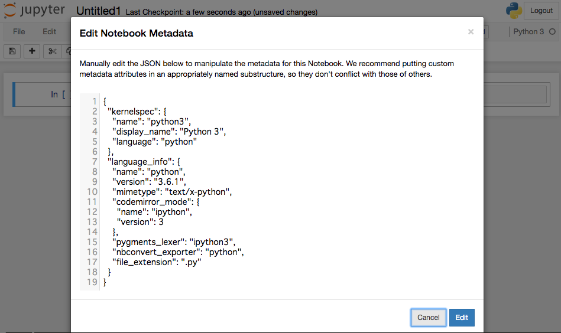

Article
Following type of files in the contents directory are processed as article object.
reStructuredText
Markdown
HTML
ipynb
Article objects are converted to HTML and written to the outputs directory.
reStructuredText
Files with the extension .rst are converted to HTML by the reStructuredText parser.
Title of the article
------------------------------
My first article in reStructuredText.
As in this example above, if a header is described at the beginning of the document, that header is the document title property. The title property can also be specified with the` article` directive.
Miyadaiku provides directive and role for rst to set properties, to embed Jinja2 templates, etc.
Article drective
The article directive specifies the properties of the article.
.. article::
:date: 2017-01-01
:title: Title of the article
:category: category1
:tags: tag1, tag2
Sample of article directive
-----------------------------------
This is a miyadaiku article in reST.
In this example, we specify date, title, category, tags as document properties.
You can specify any item as a property. For property settings, see Property.
Jinja directive
The contents written in the jinja directive are converted to HTML by the Jinja2 template engine. In the template you can reference Template variables.
Properties of this document
-----------------------------------
.. jinja::
<ul>
<li> Category is {{ content.category }} </li>
<li> Tags are {{ ', '.join(content.tags) }} </li>
<li> Date is {{ content.date.strftime('%Y-%m-%d') }} </li>
</ul>
Jinja role
The string specified in the :jinja: role is converted to HTML by the Jinja2 template engine. In the template you can reference Template variables.
Link test
-------------
Link to :jinja:`{{ content.link_to("./hello.rst") }}`.
Code-block directive
Source code in the `` code-block`` directive is syntax highlighted by Pygments. You can specify a language in `` .. code-block :: lang`` form.
.. code-block:: python
:caption: sample python code
def test():
pass
Target directive
Embed the <div> element with id to be specified as the target of the link.
.. target:: id_of_this_section1
Section I
-------------------
Body of section I.
Section II
------------------
Link to :jinja:`content.link(fragment='id_of_this_section1')`.
Markdown
Files with the extension .md are converted to HTML by the Markdown module.
By default, Extra extension of the the Markdown module is enabled.
Property
You can specify the property name and property value at the beginning of the document file.
date: 2017-01-01
title: Title of document
category: category1
tags: tag1, tag2
# Miyadaiku article
This is a Miyadaiku article in Markdown.
Property values are specified one per line, separating property names and value with :.
Jinja2 template
Jinja2 templated can be written in the form :jinja:`Jinja 2 tag`.
# Link test
Link to :jinja:`{{ content.link_to("./hello.rst") }}`.
Target
You can generate <div> element with id with :target:`id_of_div`. The div could be used as target of the link.
:target:`id_of_this_section1`
# Section I
Body of section I.
# Section II
Link to :jinja:`content.link_to(content, fragment='id_of_this_section1')`.
HTML
Files with the extension .html is read as an HTML file with the document properties specified at the beginning of the document, and outputted as HTML by the Jinja2 template engine.
Property
You can specify the property name and property value at the beginning of the document file.
date: 2017-01-01
title: Document title
category: Category1
tags: Tag1, Tag2
<p>This is a HTML file</p>
Property values are specified one per line, separating property names and value with :.
Jinja2 template
HTML files are processed by Jinja2 template engine. Jinja2 tags can be used in the HTML files.
<p>Link to <a href='{{ content.link_to("./hello.rst") }}'>hello</a></p>
Jupyter notebook
Files with extension ".ipynb" are read as Jupyter notebook.
Property
Jupyter notebook properties are specified as: jinja:{{content.link_to('./config.rst', fragment= 'external_prop_file')}} or as notebook metadata.
Jupyter notebook metadata settings
Select Edit -> Edit Notebook Metadata on the Jupyter.

Add the miyadaiku key to JSON and specify the property value. The following example specifies the title property and date property.
Sample property of Jupyter notebook:{ "kernelspec": { "name": "python3", "display_name": "Python 3", "": " ommit inrelevant lines" " ... " " ... " "miyadaiku": { "title": "Title of Jupyter notebook", "date": "2017-01-01", } }
Template variables
Jinja templates in the articles, following variables can be used.
- content
Refer to the Content object of current article.
- page
Refer to the Content object of the content calling the article.
- contents
Refer to the Contents collection of the project.
Content and page
When converting an article to HTML, in the Jinja 2 template in the article, the variables content and page both refer to the same article object currently being processed. In this case content and page refer to the same object.
However, if the article is loading another article, in the Jinja 2 template in the article being loaded, the article is referenced by the variable content, and the article loading another article is referred by variable page.
This is parent.rst
page: {{ page.name }}
content: {{ content.name }}
---
{{ content.load('./child.rst').html }}
This is child.rst
page: {{ page.name }}
content: {{ content.name }}
When converting parent.rst to HTML, {{content.load('./child.rst').html}} loads child.rst.
In this case, in the template in parent.rst,
page refers parent.rst object
content refers parent.rst object
In the template in child.rst
page refers parent.rst object
content refers child.rst object
Imported template
The Jinja2 template specified in the imports property are imported. The module name of the template is the file name excluding the extension of the name of the template.
.. article::
:imports: my_template.html
Imports my_template.html and use my_macro()
{{ my_template.my_macro() }}